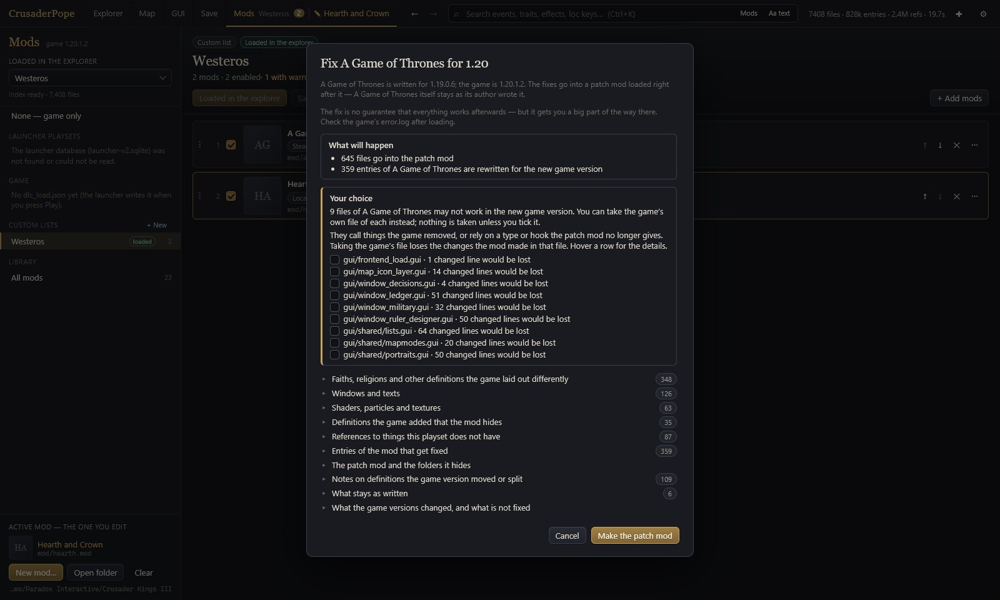

New in 0.3.0: Fix for 1.20
Bring an older mod to 1.20, on its own
Pick a mod made for an older version of the game and choose Fix for 1.20…. CrusaderPope reads the mod against the game, works out what 1.20 changed underneath it and writes a patch mod that loads right after it; the mod itself stays as it is. It won’t settle every edge case, and it tells you which ones are left; for nearly everything else it gets you most of the way there.
- What 1.20 renamed or moved is converted, also where the mod’s scripts, events, interface files and texts use it
- The mod’s old copies of game files are brought up to date without touching its own values
- The mod’s graphics are fitted into the game’s new shaders
- A plan first; run it again after a game or mod update

